Brand identity / 2025
Murjan Adventure Platform
MURJAN Murjan is a Saudi digital platform that brings tourism and adventure experiences closer to everyone. With a focus on innovation, quality, and trust, the brand simplifies booking and exploring unique activities across the Kingdom — from cultural events to thrilling adventures. This project reflects Murjan’s mission to break the routine and elevate every journey with unforgettable moments.
Website Banner
Social media Visuals
Company Profile
Murjan — Break the routine, elevate the dopamine. Company Profile Explore and book tourism & adventure experiences across Saudi Arabia with ease and trust.
MURJAN Murjan is a Saudi digital platform that brings tourism and adventure experiences closer to everyone. With a focus on innovation, quality, and trust, the brand simplifies booking and exploring unique activities across the Kingdom — from cultural events to thrilling adventures. This project reflects Murjan’s mission to break the routine and elevate every journey with unforgettable moments.
Website Banner
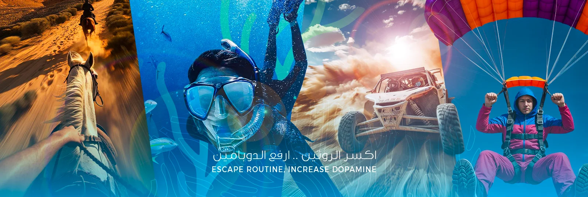
Social media Visuals
Company Profile
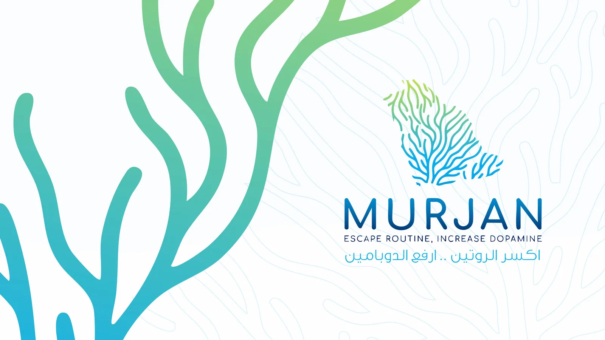
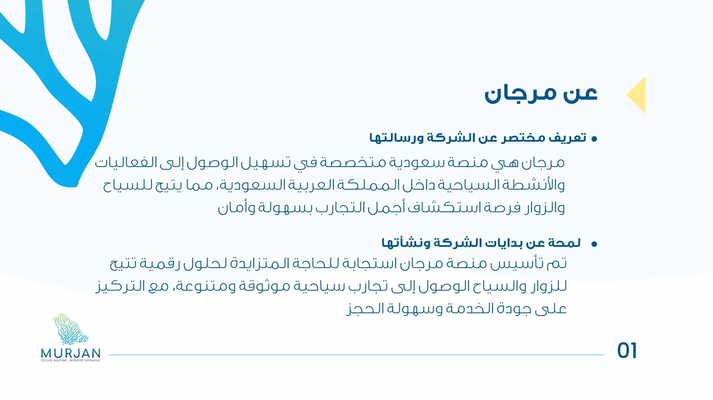
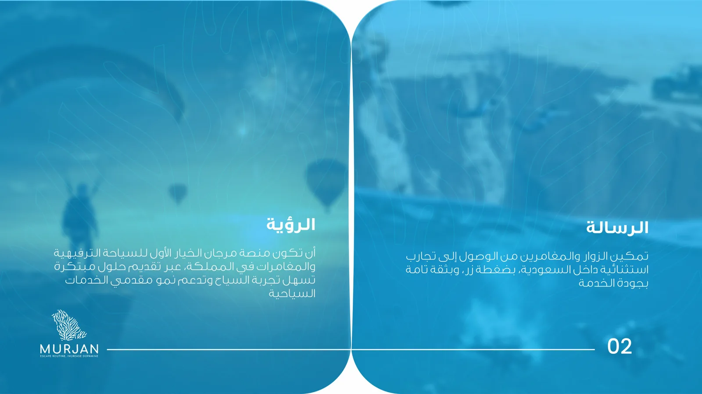
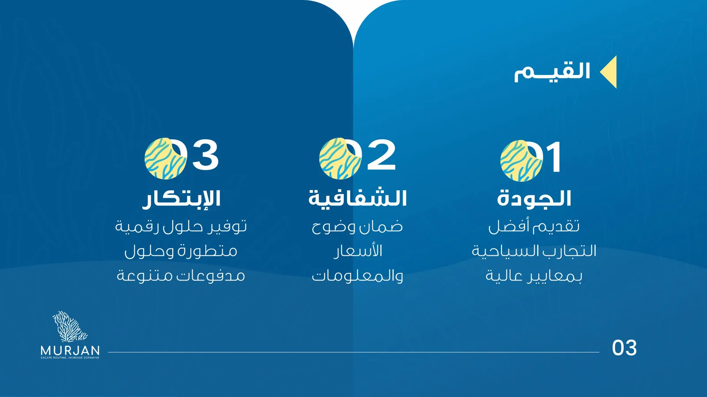
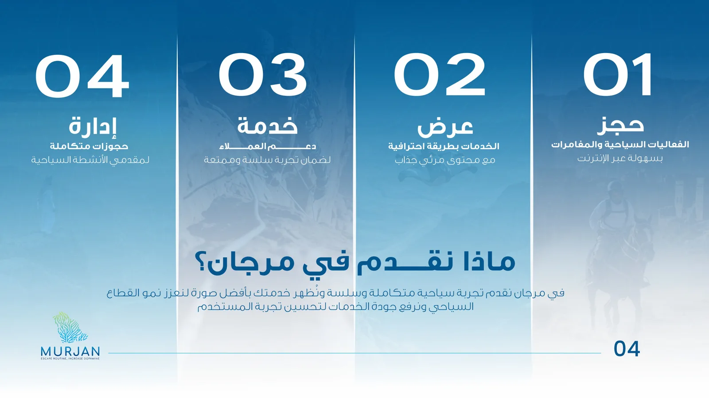
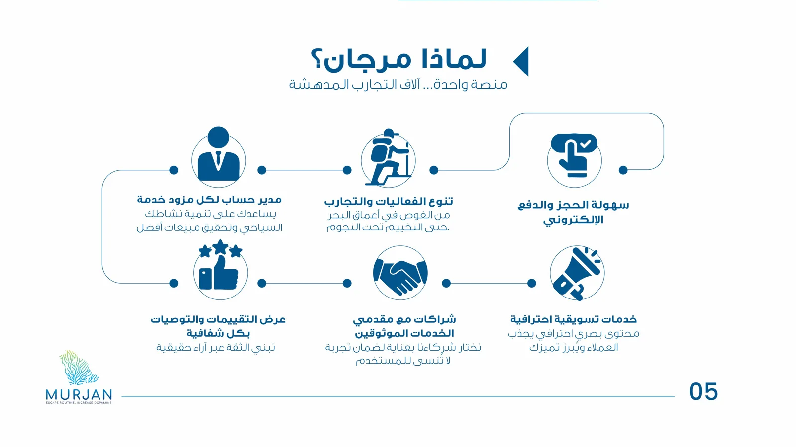
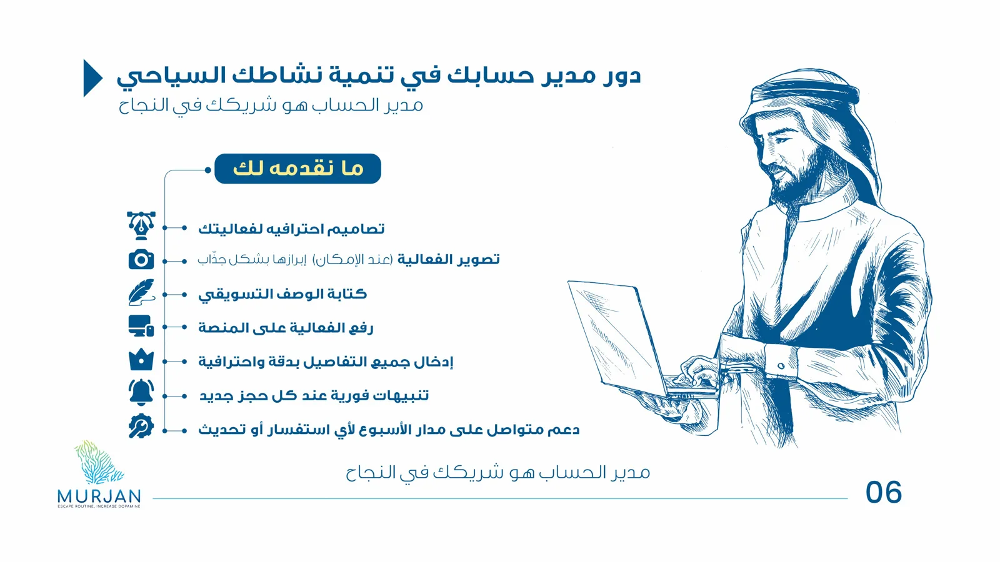
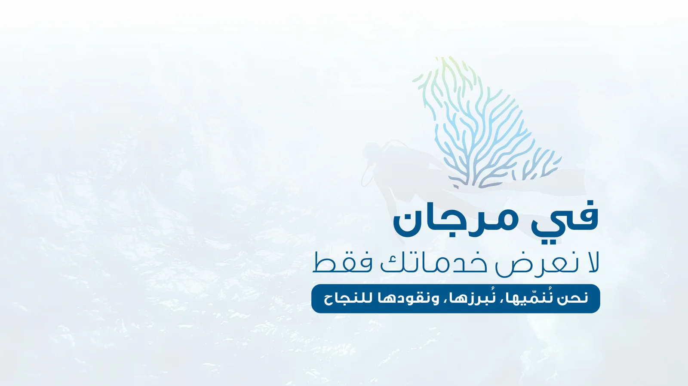
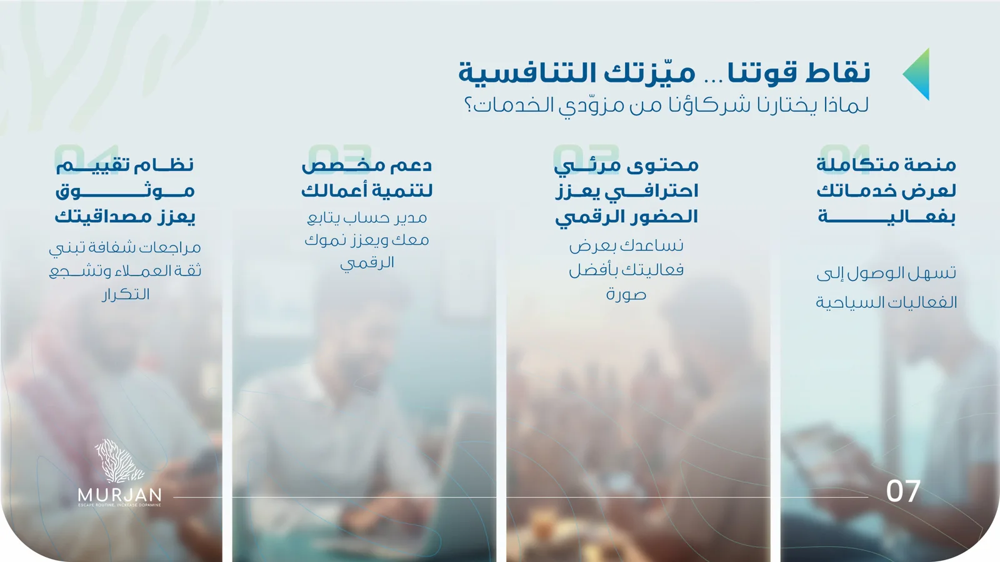
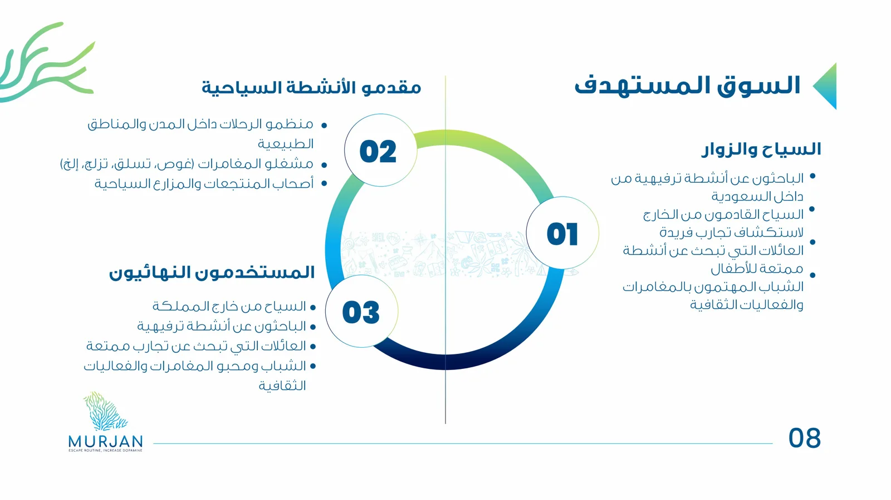
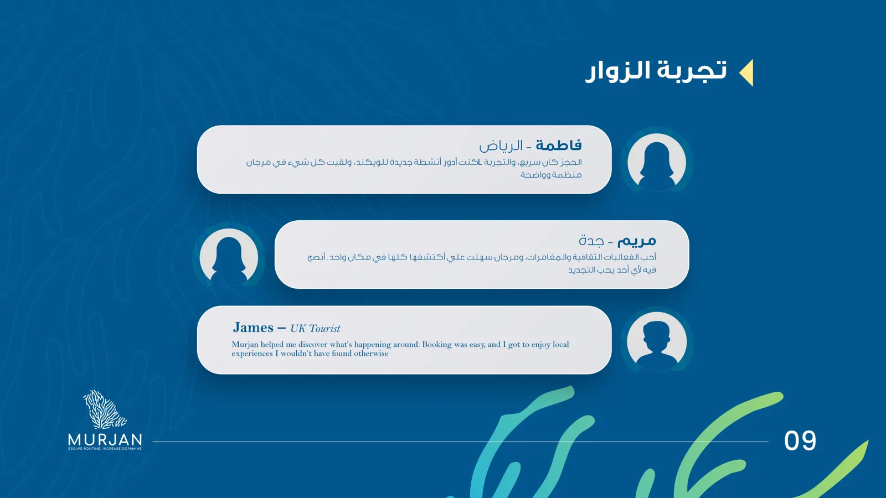
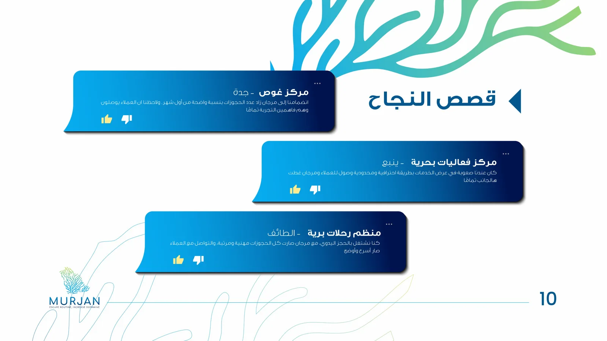
Murjan — Break the routine, elevate the dopamine. Company Profile Explore and book tourism & adventure experiences across Saudi Arabia with ease and trust.